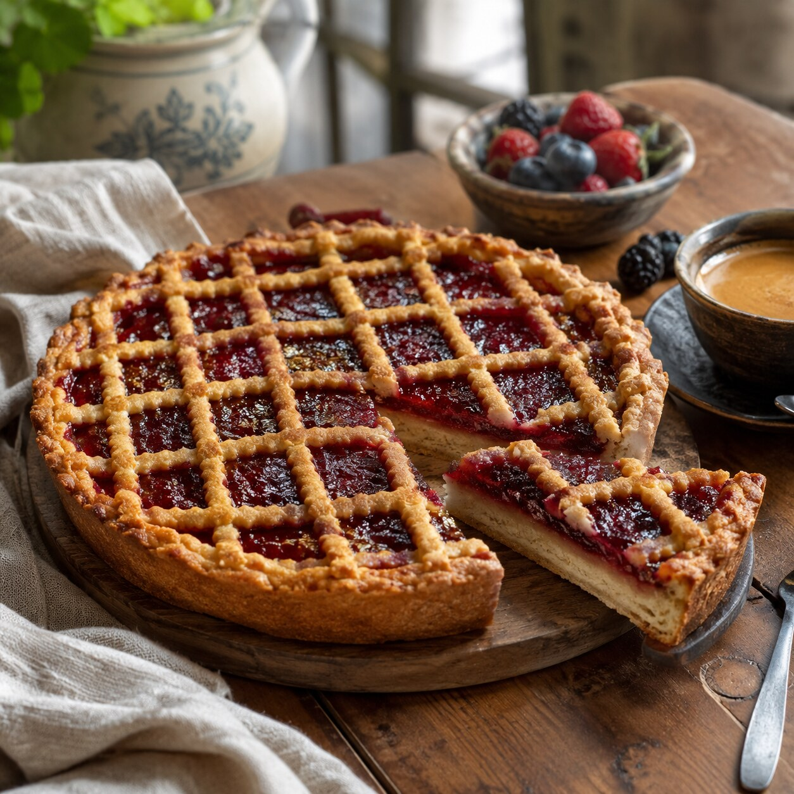
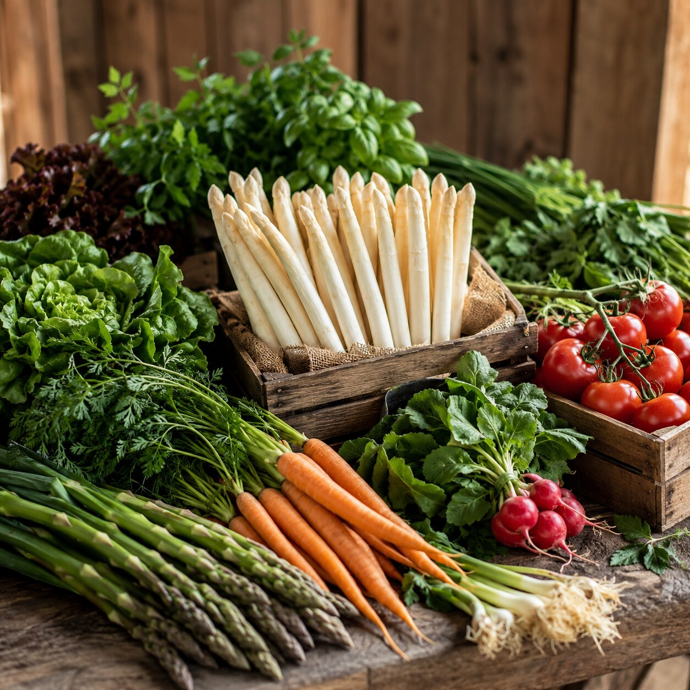
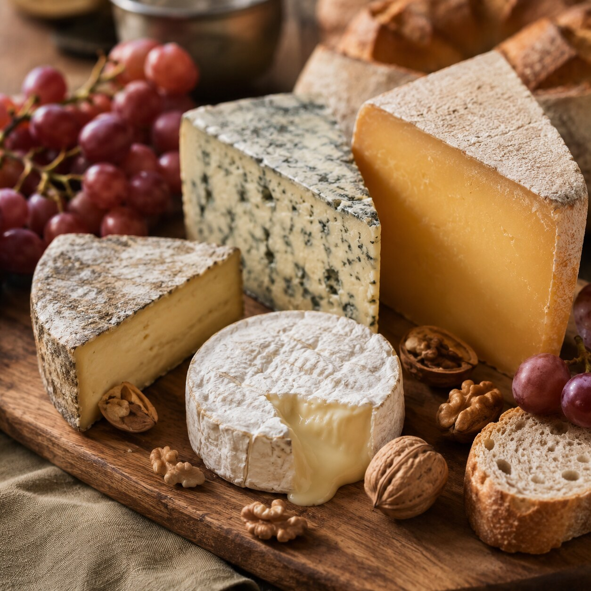
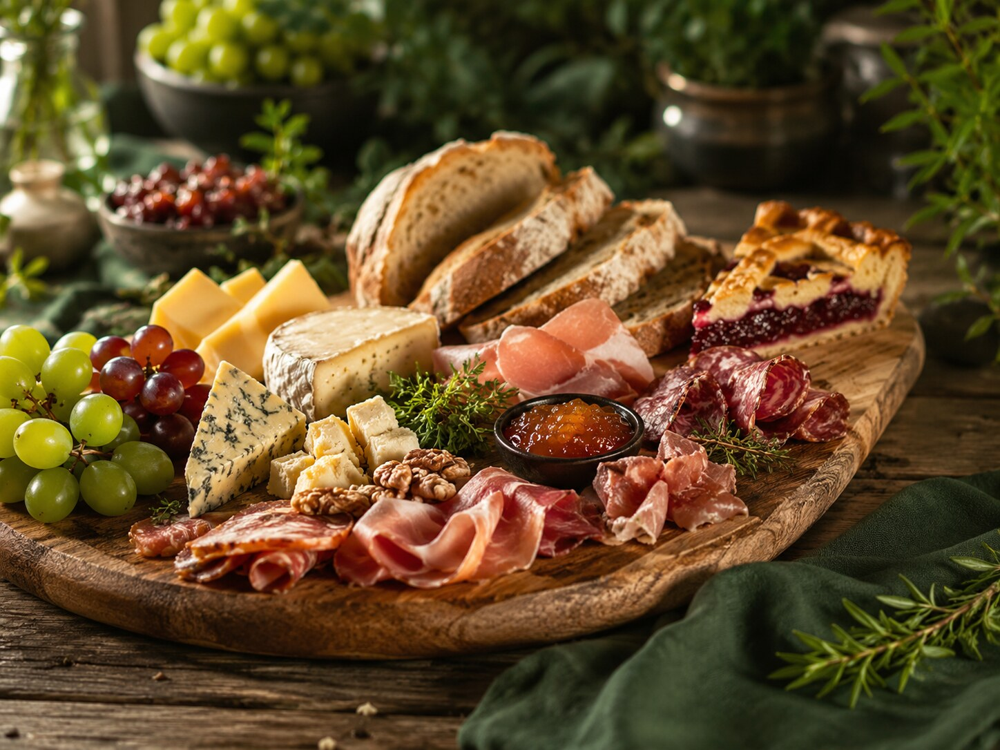
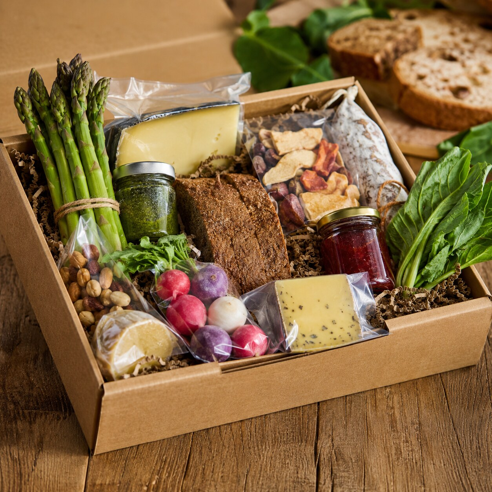
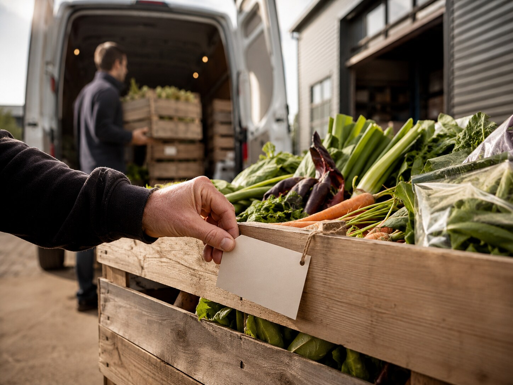

Bakkerij
Limburgse vlaai
Voor koffie, dessertkaart en lunchconcepten met een herkenbaar streekverhaal.
De ondernemer wil niet zoeken naar losse herkomstinformatie. Deze assortimentspagina laat zien hoe lokale producten, toepassing en leverancier in één overzicht samenkomen.

Van koffie en dessert tot borrelplank en seizoensmenu: elk product heeft een duidelijke rol in het horecaconcept.

Voor koffie, dessertkaart en lunchconcepten met een herkenbaar streekverhaal.

Voor borrelplanken, lunchgerechten en lokale menu-accenten.
Verse producten van regionale grond, passend bij wisselende menukaarten.

Een samengestelde bundel met kaas, vleeswaren, brood, fruit en chutney.

Een laagdrempelige selectie waarmee ondernemers het lokale aanbod kunnen testen.

Een QR of kaartje met korte tekst die direct bruikbaar is voor bediening of menukaart.
Een duidelijke filter “Lokaal Limburg”, productbundels en herkomstkaartjes zorgen dat de ondernemer sneller begrijpt wat beschikbaar is en waarom het waarde toevoegt.